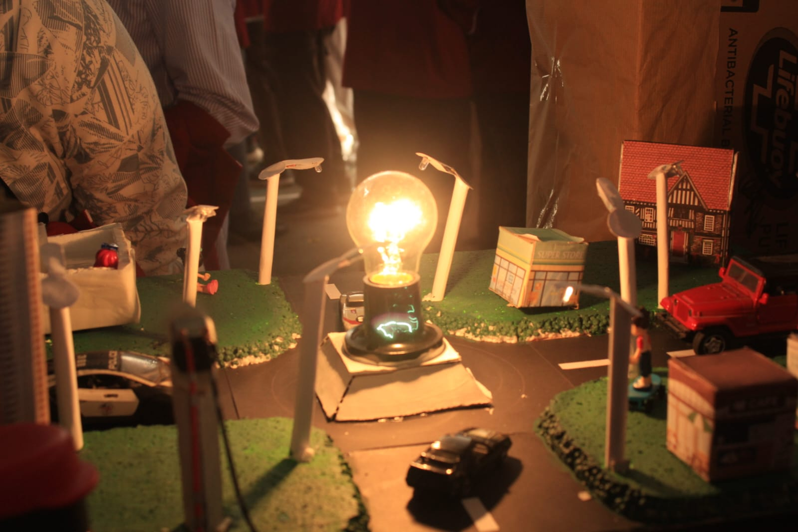
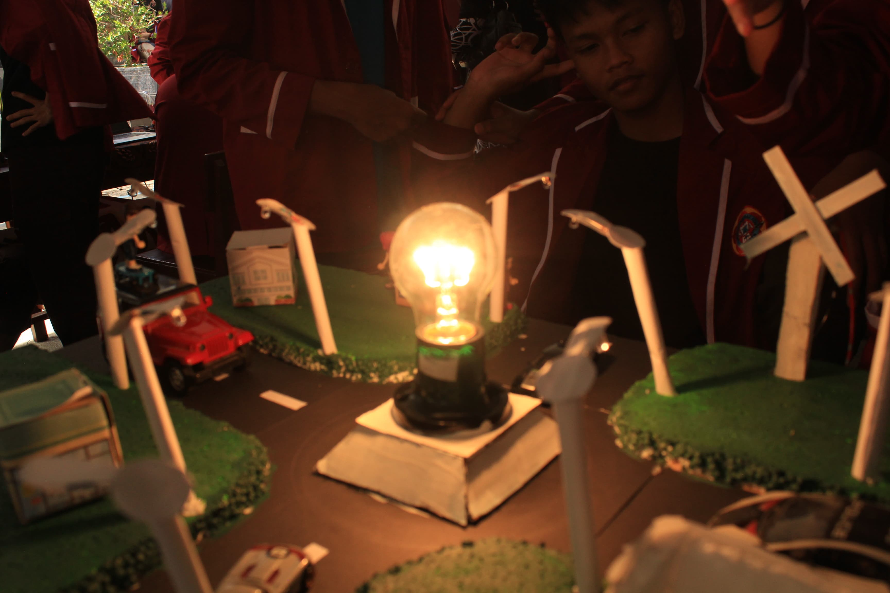
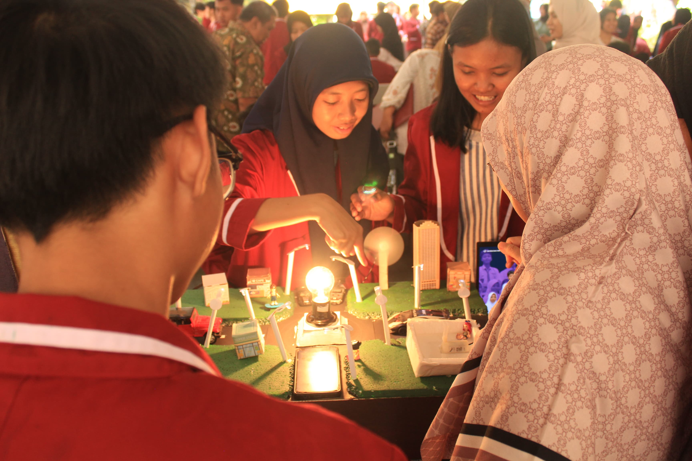

GALERY

Gambar 1

Gambar 2

Gambar 3

Gambar 4

Di era sekarang, teknologi berkembang sangat cepat dan memengaruhi hampir semua aspek kehidupan kita. Mulai dari pendidikan, pekerjaan, hingga cara berkomunikasi, semuanya banyak bergantung pada teknologi. Oleh karena itu, penting bagi kita untuk memahami bagaimana teknologi bisa dikembangkan dan dimanfaatkan dengan baik. Salah satu konsep yang penting dalam pengembangan teknologi adalah P5 Rekayasa Teknologi. P5 ini terdiri dari lima pilar utama, yaitu:
Dengan menguasai kelima hal ini, kita bisa lebih siap dalam menghadapi tantangan dunia modern. Melalui pemahaman P5 Rekayasa Teknologi, siswa dapat belajar bagaimana cara memecahkan masalah dengan teknologi, berpikir kreatif, menguasai alat-alat digital, meningkatkan kemampuan diri, dan mengelola data dengan bijak. Ini semua penting agar kita bisa berkontribusi dalam menciptakan inovasi yang berguna bagi masyarakat. Pada makalah ini, kita akan membahas lebih lanjut tentang apa itu P5 Rekayasa Teknologi, manfaatnya, dan bagaimana kita bisa menerapkannya dalam kehidupan sehari-hari.
Gambar 1
Gambar 2
Gambar 3
Gambar 4
Kami adalah sekelompok siswa yang berkolaborasi dalam sebuah proyek pembuatan website sebagai bagian dari tugas sekolah/kuliah kami. Website ini dibuat dengan tujuan untuk mengembangkan keterampilan kami dalam bidang teknologi, desain, dan kerja tim. proyek ini, kami belajar bagaimana merancang, membangun, dan mengelola sebuah situs web dari awal hingga selesai. Setiap anggota tim memiliki peran masing-masing, mulai dari penulisan konten, desain tampilan, pemrograman, hingga pengujian sistem. Meskipun kami masih dalam tahap belajar, kami berusaha memberikan yang terbaik dan menjadikan proyek ini sebagai pengalaman berharga yang bisa kami banggakan. Terima kasih telah mengunjungi website kami!
Nama: Muhammad Asyamy Rayhan
Nomor Presensi: 19
Kelas: XI Kartini 4
Nama: Nadeen Daniya Rahma
Nomor Presensi: 22
Kelas: XI Kartini 4
Nama: Nasya Kireina Wanda
Nomor Presensi: 24
Kelas: XI Kartini 4
Nama: Neysya Faradisa
Nomor Presensi: 27
Kelas: XI Kartini 4
Jika Anda ingin bertanya, memberikan saran, atau sekadar ingin tahu lebih lanjut mengenai kegiatan P5 Rekayasa Teknologi SMAN 1 Pekalongan, silakan hubungi kami melalui: